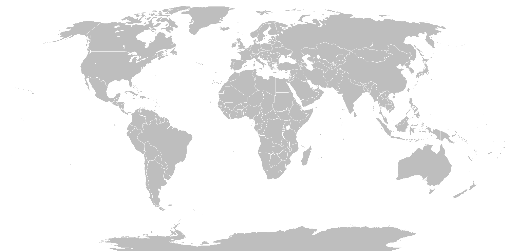

Hello! My name is Arthur GELINEAU, I’m 19 years old and currently studying at ENSEEIHT (INP Toulouse) in the Digital Sciences department. I’m passionate about cybersecurity, and I’m particularly interested in its technical aspects, such as penetration testing, Red Teaming, and bug bounty, and its strategic and entrepreneurial dimensions.
Through this ePortfolio, I aim to share my academic journey, technical projects, and reflections on cybersecurity as a constantly evolving field. It reflects both my learning path at ENSEEIHT and self-taught learner in cybersecurity, my curiosity for technology, and my motivation to tackle real-world security challenges.
I’m especially drawn to offensive security and to exploring how cybersecurity applies to defense and critical systems, where reliability and resilience are paramount.
Feel free to browse through the different sections to learn more about my studies, technical work, and ambitions in the fascinating world of cybersecurity.
Career Development
This section summarizes my professional profile, including my CV, career goals, and personal projects that shape my future as an engineer. You will also find links to my LinkedIn profile, resume, and a brief video presentation describing my ambitions and professional values.
I’ve always been driven by curiosity and the desire to build things that matter. Alongside my studies, I explore cybersecurity independently through TryHackMe, where I’m developing strong foundations in offensive security and penetration testing, skills I plan to refine throughout my career.
Beyond cybersecurity, I love turning ideas into real prototypes. One of my ongoing personal projects is a physical alarm clock built on a Raspberry Pi. It plays a custom song chosen through a web interface — a small but fun challenge that blends web development, networking, and embedded systems.
I’m also involved as a contributor for my school’s Junior Enterprise, which gives me the opportunity to work on real projects for clients and share my knowledge with others. These experiences help me connect technical curiosity with real-world impact.
More recently, I’ve been working with a close friend on the early stages of a startup idea. We’re still exploring the concept and direction, but this journey fuels my interest in innovation, teamwork, and building something meaningful from scratch.
Ultimately, I see my future as a cybersecurity engineer who combines technical expertise with creativity and initiative — someone who doesn’t just analyze systems, but designs and improves them.
Engineering Courses & Projects
This section presents my main academic achievements and projects completed during my engineering studies. It highlights both theoretical and practical experiences that helped me develop technical skills, teamwork abilities, and problem-solving strategies.
Project Title
Description:
Completed a web development internship during my preparatory studies. The project involved both front-end and back-end aspects, giving me a better understanding of how software projects are structured in a professional environment.
Reflection:
This experience taught me how to work with deadlines, apply clean coding practices, and build web applications that balance technical robustness with usability. It also reinforced my interest in creating solutions that have real-world impact.
Project Title
Description:
This large 10-week group project combined theoretical and practical work around the gradient descent algorithm and its application to image recognition. Working collaboratively, we created our own dataset and developed algorithms to detect plastic bottles in the ocean, illustrating how mathematical optimization can be applied to environmental challenges.
Reflection:
Through this project, I learned how to apply mathematical principles to real-world problems in a collaborative setting. It helped me connect theoretical knowledge with concrete experimentation using Python and image recognition libraries, and strengthened my teamwork and project management skills over a long-term academic project. It also sparked my growing interest in AI and data-driven solutions.
Project Title
Description:
Developed a Connect Four game in Python as part of a team project during my preparatory studies. The objective was mainly algorithmic, focusing on implementing efficient game logic and decision-making structures.
Reflection:
This was my first real coding project, marking my introduction to programming. As my teammates were less experienced in coding, I took the lead in implementing the main logic, then explained my subprograms to ensure group understanding. It was a great opportunity to strengthen both my technical autonomy and my communication skills within a team.
International Mobility
This section focuses on my international experience and cultural openness as an engineering student. Whether through an exchange program, internship abroad, or a future mobility plan, I aim to broaden my perspective, improve my language skills, and discover new approaches to engineering around the world.
I am planning an international mobility and have highlighted the countries I am interested in on the world map. Click on each country to discover my motivations and what I aim to learn there.

🇺🇸
🇧🇷
🇲🇽
Civic Engagement & Sustainability
Here I share my involvement in social, civic, or environmental activities that contribute to building a responsible and sustainable society. These experiences have helped me develop a sense of social responsibility, teamwork, and awareness of global issues beyond technical challenges.
Throughout my academic journey, I have taken part in various initiatives that allowed me to develop a sense of responsibility and teamwork. In Toulouse, I participated in a clean walk organized by the Bureau of Sustainable Development, contributing to local environmental awareness. I also briefly engaged in a project during my engineering studies aimed at detecting plastic bottles in oceans. Beyond environmental initiatives, I am actively involved in school life: I serve as a mentor and intervenant for my school’s Junior Enterprise and regularly participate in events organized by the Net7 IT club. Previously, during my preparatory classes, I was a member of the Student Council, an experience that helped me build organizational and leadership skills. These activities have taught me how to collaborate effectively, manage responsibilities, and apply my skills in diverse contexts.
Sports & Other Activities
Beyond academics, I believe in the importance of balance and personal development through sports and hobbies. Here I share the activities that inspire me, help me stay motivated, and allow me to cultivate teamwork, perseverance, and creativity.
These different activities, both athletic and artistic, help me maintain a healthy balance between personal challenge, teamwork, and self-expression, qualities that I aim to bring into my engineering and cybersecurity projects.